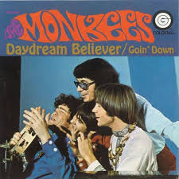
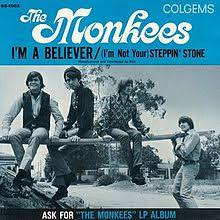
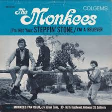

Listen.
Last Train To Clarksville.

Take the last train to Clarksville And I'll meet you at the station You can be there by four-thirty 'Cause I've made your reservation, don't be slow Oh, no, no, no Oh, no, no, no 'Cause I'm leaving in the morning And I must see you again We'll have one more night together Till the morning brings my train and I must go Oh, no, no, no Oh, no, no, no And I don't know if I'm ever coming home Take the last train to Clarksville I'll be waiting at the station We'll have time for coffee-flavored kisses And a bit of conversation Oh, no, no, no Oh, no, no, no Take the last train to Clarksville Now I must hang up the phone I can't hear you in this noisy railroad station all alone I'm feeling low Oh, no, no, no Oh, no, no, no And I don't know if I'm ever coming home Oh Take the last train to Clarksville And I'll meet you at the station You can be here by four-thirty 'Cause I've made your reservation, don't be slow Oh, no, no, no Oh, no, no, no And I don't know if I'm ever coming home Take the last train to Clarksville Take the last train to Clarksville Take the last train to Clarksville Take the last train to Clarksville
Day Dream Believer.
7-A What number is this to? 7-A Okay, don't get excited man, it's 'cause I'm short, I know Oh, I could hide 'neath the wings Of the bluebird as she sings The six-o'clock alarm would never ring But six rings and I rise Wipe the sleep out of my eyes The shaving razor's cold and it stings Cheer up sleepy Jean Oh, what can it mean to a Daydream believer and a Homecoming queen? You once thought of me As a white knight on his steed Now you know how happy I can be Oh, our good time starts and ends Without all I want to spend But how much, baby, do we really need? Cheer up sleepy Jean Oh, what can it mean to a Daydream believer and a Homecoming queen? Cheer up sleepy Jean Oh, what can it mean to a Daydream believer and a Homecoming queen? Cheer up sleepy Jean Oh, what can it mean to a Daydream believer and a Homecoming queen? Cheer up sleepy Jean Oh, what can it mean to a Daydream believer and a Homecoming queen? Cheer up, sleepy Jean
I'm A Believer.
I thought love was only true in fairy tales Meant for someone else but not for me Love was out to get me That's the way it seemed Disappointment haunted all of my dreams Then I saw her face, now I'm a believer Not a trace of doubt in my mind I'm in love I'm a believer, I couldn't leave her if I tried I thought love was more or less a giving thing Seems the more I gave the less I got What's the use in tryin' All you get is pain? When I needed sunshine, I got rain Then I saw her face, now I'm a believer Not a trace of doubt in my mind I'm in love I'm a believer, I couldn't leave her if I tried Oh Oh, love was out to get me Now, that's the way it seemed Disappointment haunted all of my dreams Then I saw her face, now I'm a believer Not a trace of doubt in my mind I'm in love I'm a believer, I couldn't leave her if I tried Yes, I saw her face, now I'm a believer Not a trace of doubt in my mind Said, I'm a believer, yeah, yeah, yeah, yeah, yeah, yeah (I'm a believer) Said, I'm a believer, yeah (I'm a believer) I said, I'm a believer, yeah (I'm a believer)
Stepping Stone
I-I-I-I-I'm not your steppin' stone
I-I-I-I-I'm not your steppin' stone
You're trying to make your mark in society You're using all the tricks that you used on me You're reading all them high-fashion magazines The clothes you're wearing, girl, they're causing public scenes
I said, I-I-I-I-I'm not your steppin' stone I-I-I-I-I'm not your steppin' stone Not your steppin' stone Not your steppin' stone When I first met you, girl, you didn't have no shoes But, now you're walking around like you're front-page news You've been awful careful 'bout the friends you choose But, you won't find my name in your book of "who's-who?" I said, I-I-I-I-I'm not your steppin' stone (No, girl, not me!) I-I-I-I-I'm not your steppin' stone Not your steppin' stone I'm not your steppin' stone Not your steppin' stone (step-step-steppin' stone) Not your steppin' stone (step-step-steppin' stone) Not your steppin' stone (step-step-steppin' stone) Not your steppin' stone (step-step-steppin' stone) No, girl, I'm not your steppin' stone Not your steppin' stone (step-step-steppin' stone) Not your steppin' stone (step-step-steppin' stone)